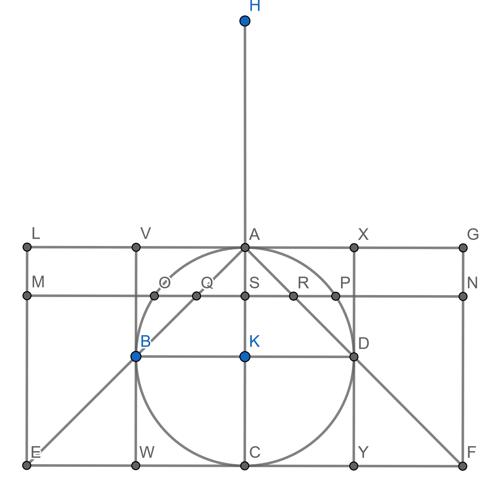

Print preview
Worksheet Archimedes Mini-Project
Overview.
This mini-project will be delivered as an oral presentation in class. Note that one of the propositions being proven will be split between two students.
These propositions amount to proving the result that Archimedes’ himself considered his crowning acheivement: that the volume of a sphere is \(2/3\) the volume of the smallest cylinder that will contain it. It is said that a sphere with a circumscribed cylinder is what he requested be etched on his gravestone.
Sources for this activity are on Canvas.
Available Propositions.
The propositions will be presented in the order listed. If you want to present first, choose the first available proposition.
1. Euclid’s Elements Book X, Proposition 1.
Euclid’s statement: Two unequal magnitudes being set out, if from the greater there is subtracted a magnitude greater than its half, and from that which is left a magnitude greater than its half, and if this process is repeated continually, then there will be left some magnitude less than the lesser magnitude set out. And the theorem can similarly be proven even if the parts subtracted are halves.
You presentation should work through the proof. It should note where in the proof Euclid uses the so-called "Archimedean Property".
2. Euclid’s Elements Book XII, Proposition 10.
Euclid’s statement: Any cone is a third part of the cylinder with the same base and equal height.
This is a classical proof using the Method of Exhaustion. You should carefully explain previous results used in the proof. You should carefully do one of the contradictions and then explain roughly what needs to be changed so that your classmates could do the other direction on their own.
3. Archimedes’ Method of Mechanical Theorems, Proposition 2.
In this project you will present Proposition 2 in The Method of Mechanical Theorems as outlined below. It will use the following figure:

Throughout these tasks, you may find it useful to translatee into Cartesian coordinates, so that you can find equations for lines etc. This is an ahistoric choice.
-
Show that \(MS\cdot SQ = OS^2+SQ^2\text{.}\)
-
Show that \(\frac{HA}{AS} = \frac{MS}{SQ}\text{.}\) Hence, you may conclude\begin{equation*} \frac{HA}{AS} = \frac{MS^2}{OS^2+SQ^2} = \frac{MN^2}{OP^2+QR^2}. \end{equation*}
-
Conclude that the circle in the cylinder, placed where it is, is in equilibrium about \(A\) with the circle in the sphere together with the circle in the cone, if both the latter circles are placed with their centers of gravity at \(H\text{.}\)
-
Use the Law of the Lever to conclude that the cone and cylinder will balance the sphere (with appropriate placements).
-
From The Elements, Book XII, Proposition 10, and the fact that the cone \(AEF\) is eight times the cone \(ABD\text{,}\) conclude that the sphere is four times the cone \(ABD\text{.}\)
4. On the Sphere and the Cylinder, Book I, Proposition 34, part A.
Your presentation should set up the contradictions used in the Method of Exhaustion for Proposition 34. Specifically:
-
State the proposition clearly.
-
Clearly state which previous propositions are used in the proof. You don’t need to prove them, but your audience needs to understand their content.
-
Provide notation that will be used for the sphere, the circumscribed and inscribed solids, and the volume of the cone. The person presenting the rest of the proof will need these.
5. On the Sphere and the Cylinder, Book I, Proposition 34, part B.
Your presentation will show the double contradiction part of this proof. Specifically:
-
Present the crucial inequalities used in the proof.
-
Derive the necessary contradictions.
Throughout your presentation you need refer to the framework set up by the previous presentation. Finally, explain how this result leads to the famous result on Archimedes’ tombstone.